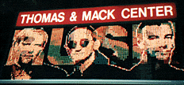
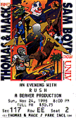

|
November 24, 1996 Thomas & Mack Arena, UNLV. Las Vegas, NV
 Scan by Vincent Medina

LONGEVITY PROVES BOTH BLESSING AND CURSE FOR ROCKERS OF RUSH
Technology is relative, Rush seems to be telling us. From the harnessing of radio waves for the commercial entertainement ("The spirit of Radio") to cyberspace ("Virtuality"), it's good to go with the flow and incorporate the changes, but more essential to do something well that stands free from technological change. In the case of Canadian power trio Rush, that something is the ability to consistently furnish rock radio with a distinctive high-octane sound, and to play it all by themselves when they have to. And since they don't have to, it means dressing up their now-static sound -- complex "progressive rock" on the edge of heavy metal -- with whatever bells and whistles come into play as the years go by. The stage set and vintage video clips for Rush's marathon concert on Sunday seemed to suggest that today's futurism is tomorow's kitsch. Art deco "space age" prop pieces suggested a long-forgotten world's fair where optimism and faith in the future prevailed. Adding satellite dishes to the stage clutter and familiar vidoe images to the cinema-size rear screen (O.J. Simpson, Bill Clinton, etc.) when the band launched its second set with the new "Test for Echo", suggests that optimism has been replaced by a cynism that technology and information aren't really leading us anywhere (Test for Echo"). And fans on Sunday could be alittle cynical when Rush could give us movie-quality front-projection video and surround sound from speakers hung over the back of the audience, yet still could'nt deliver a clean, articulate sound from the fortress os speakers that blasted the audience from above the stage. The muddy mix made it hard to find any range in Geddy Lee's familiar yelp; though he was reportedly ill enough to almost cancel the show, what you could hear sounded like the same duable voice we've been used to for more than 20 years. Longevity is the band's blessing and curse. It has the option of packing a show with nothing but favorites or new songs, which seemed to come off with more energy than they do on the new album. Yet, going so long without major change brings a certain static level to the show; so many of the new songs sound like the old ones, with only the technical effects to liven them up. And having to play to a "click track" to phase in so many of the audio and visual effects took some punch out of songs that othewise would find their own pace live. On the other hand, synthesized drum effects made Neil Peart's solo the most entertainning drum solo in years, and, coming after a funky, "Miami Vice"-style instrumental, a rare moment when the band let a little rhythm creep into its mechanic, heavily technical style. Otherwise there were precious few moments when the band felt free to loosen up, such as adding "Wipe Out" to the end of "Big Money", and their now-standard reggae flameout to the end of "Closer to the Heart". And some songs still sound timeless like the best of prog-rock: "Red Barchetta" and "Freewill" among them. But you have wonder how long Rush keeps planning on doing this, and whether an aging audience suggests they've lost the influx of young people that keeps them in the arenas instead of smaller venues. Fans have to hope the band as a whole becomes like the 1968 film "2001: A Space Odyssey" (thus "Spake Zarathustra" opened the show) or their own 1976 sci-fi opus, "2112", which drew a huge crowd reaction: Dated but still worthy and lovable in their own ways.
|